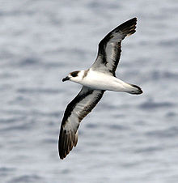
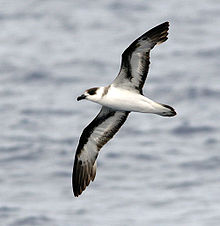

| Black-capped Petrel | |
|---|---|
|  | |
| Conservation status | |
| Binomial name | |
| Pterodroma hasitata (Kuhl, 1820) |
| Black-capped Petrel | |
|---|---|
|  | |
| Conservation status | |
| Binomial name | |
| Pterodroma hasitata (Kuhl, 1820) |
The Black-capped Petrel (Pterodroma hasitata) is a small seabird in the gadfly petrel genus, Pterodroma. It is also known as the Diablotín. The extinct Jamaica Petrel (P. caribbaea) was a related dark form, often considered a subspecies of this bird.
This long-winged petrel has a grey-brown back and wings, with a white nape and rump. Underparts are mainly white apart from a black cap (that in some individuals extends to cover the eye) and some dark underwing makings. It picks food items such as squid from the ocean surface.
The Black-capped Petrel is nocturnal at the breeding sites possibly to avoid predation by gulls, hawks or crows. Like most petrels, its walking ability is limited to a short shuffle to the burrow. Although this seabird once breed on cliffs in the mountains of the Greater Antilles, only three confirmed breeding sites remain, all in the high mountains of Hispaniola (at Lomo de Toro in the Dominican Republic, and in Parc La Visite and Parc Macaya on Haitian side of the island). The local name Diablotín means "little devil", called so because of its night-time habits and the odd-sounding mating calls, which may have suggested to locals the presence of evil spirits in the dark. A mountain peak where it formerly bred in Haiti (and another in Dominica, Lesser Antilles) is still named Morne Diablotin.
The species, once widespread in the West Indies, is now far less common. It is an uncommon but regular visitor to the southeastern USA, and an extremely rare wanderer to western Europe. Causes for its demise include habitat loss, introduced predators, and direct human harvesting.

{kind=link}